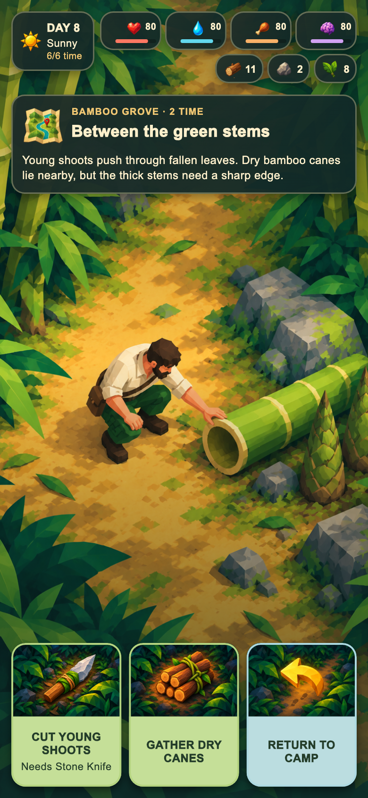
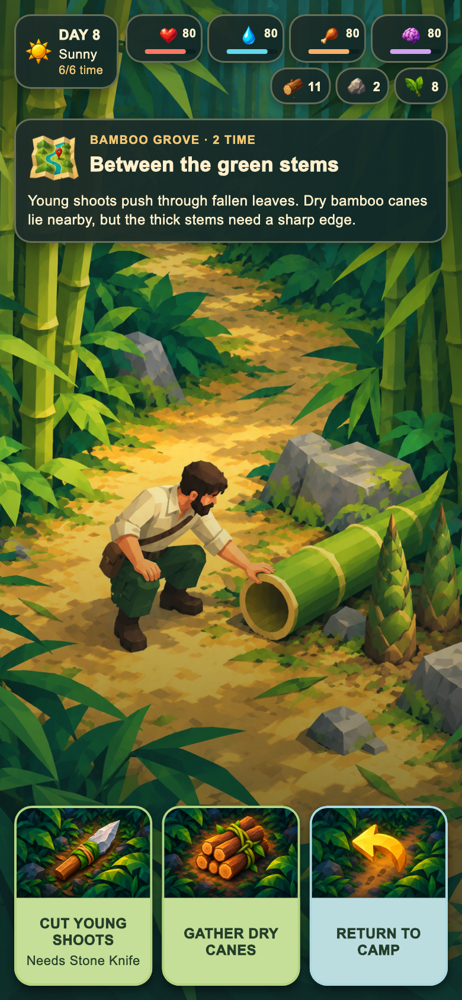
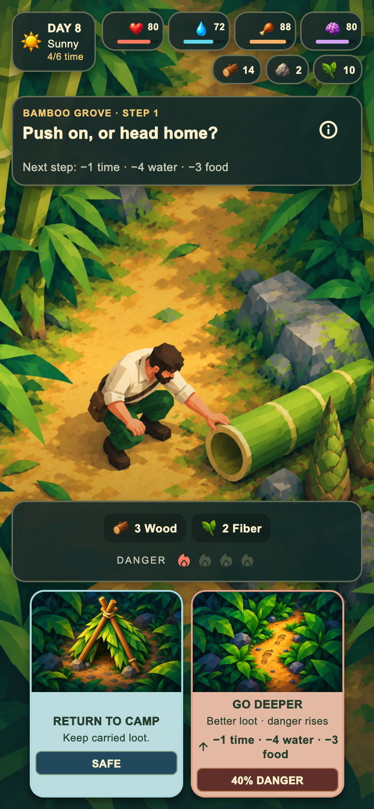
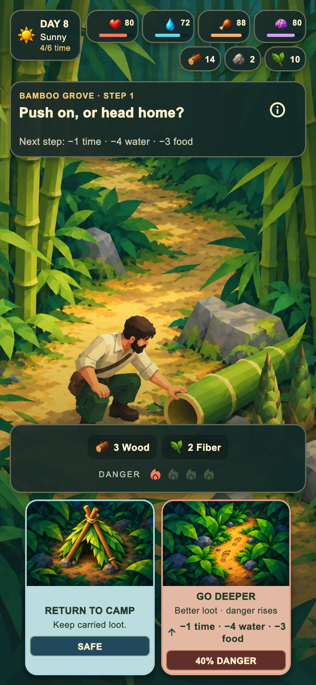
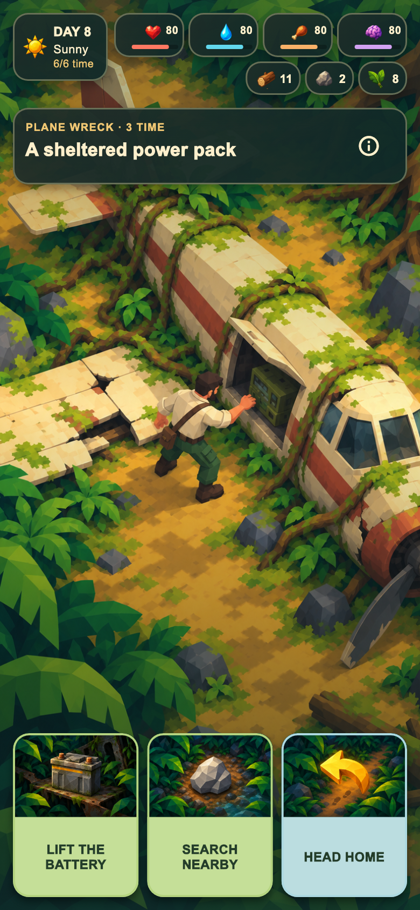
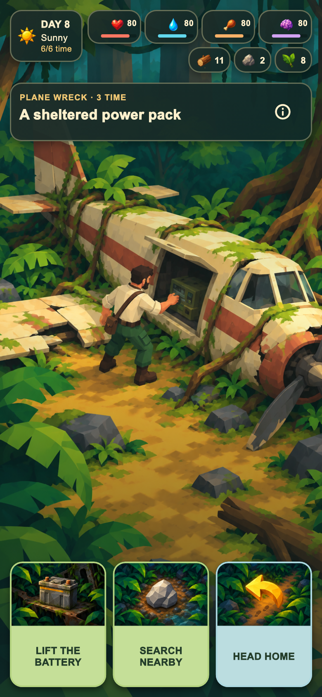
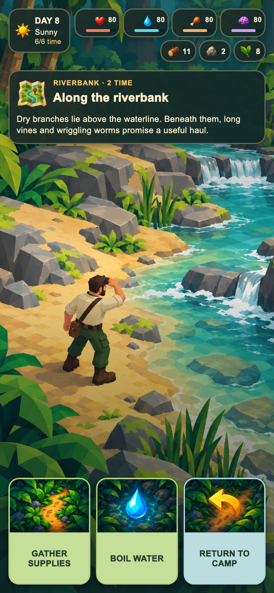

Három új háttér, négy érintett mobilképernyő. Az izometrikus felülnézetben a talaj és a tárgyak teteje látszik; a bambusz esemény és expedíció ugyanazt a képet használja. Tényleges Flutter widgetek: 780 × 1688 PNG.
Teljes 17 képes galéria · Beépített imagegen: pontos promptok


Javított PNG · Korábbi PNG




